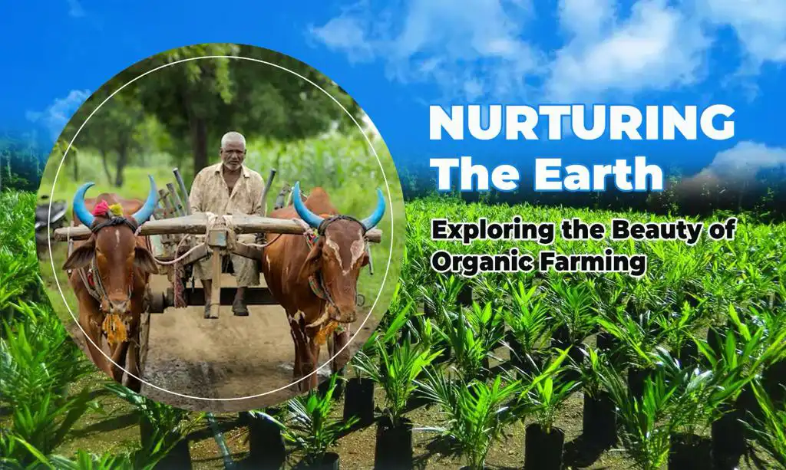

Nurturing the Earth: Exploring the Beauty of Organic Farming
- by Get Farms 20 December 2023
The practice of organic farming stands out as an example of sustainable agriculture at a time when environmental issues are at the forefront of national and international debates. Organic farming encourages the peaceful coexistence of humans and nature and is more than just a technique. We explore the concepts, advantages, and importance of organic farming in this blog to better understand why it is so important for the sustainable future that we all aspire to.
The Essence of Organic Farming
Fundamentally, organic farming is an all-encompassing method of agriculture that aims to cooperate rather than compete with nature. Contrary to conventional farming, which mainly relies on artificial fertilizers, pesticides, and herbicides, organic farming makes use of natural processes to preserve soil fertility, manage pests, and grow strong crops. Soil health is one of the guiding principles of organic farming. Composting, cover crops, and crop rotation are priorities for organic farms for creating and maintaining good soil. In addition to producing healthier crops, healthy soil sequesters carbon, preventing climate change. Both farmers and the environment benefit from it.
Benefits
Healthier Food: Organic produce is frequently more nutritious and free of synthetic chemicals. According to studies, organic produce frequently contains higher concentrations of vitamins, minerals, and antioxidants.
Conservation of the environment: Organic agricultural methods are kind to the environment. They enhance biodiversity, maintain water quality, and decrease soil erosion. Organic farms contribute to the preservation of pollinators like bees and butterflies by avoiding synthetic chemicals.
Healthier Food: Organic produce is frequently more nutritious and free of synthetic chemicals. According to studies, organic produce frequently contains higher concentrations of vitamins, minerals, and antioxidants.
Reduced Carbon Footprint: Organic farming can aid in the fight against global warming. Carbon dioxide from the atmosphere is absorbed and stored by healthy organic soils, which serve as carbon sinks. Furthermore, organic farms often use less energy to produce their crops.
Supporting Local Economies: Organic farms frequently concentrate on local markets, supporting local economies. This strategy lessens the carbon footprint associated with long-distance food delivery and supports local businesses.
Pesticide Reduction: Synthetic pesticides, which can have detrimental effects on both human health and the environment, are not used in organic farming. Customers may help the environment and reduce pesticide residues in food by buying organic products.
Getfarms and Organic Farming
Getfarms is a shining example of a resource that supports both farmers and customers in the area of organic farming. Getfarms is committed to advancing sustainable agriculture, with a focus on organic farming practices in particular. Also, Getfarms acts as a great platform to buy agricultural land near Chennai. They are aware of the significance of ethical farming and its potential to improve our agricultural landscape. To make it simpler for people to get fresh, organic products, Getfarms provides a platform that links customers with nearby organic farmers. Getfarms helps regional economies and lessens the environmental impact of long-distance food transportation by enabling this close link. The principles of individuals looking for better, more sustainable food options are well aligned with their dedication to organic farming.
Challenges and the Future of Organic Farming
Having a lot of advantages, organic farming also faces many difficulties. In
comparison to their conventional
counterparts, organic farmers frequently experience greater production expenses and lower
yields. These difficulties
must be acknowledged, and we must all work together to resolve them. Technological advancements,
market demand, and
government backing can all help organic farming become more popular.
The future of organic farming is promising. As public awareness of the advantages to the
environment and health grows,
so does the public demand for organic products. The importance of promoting organic agriculture
through financial
incentives, research, and outreach is beginning to be recognized by governments and
organizations all over the world.
In conclusion, organic farming is a commitment to caring for the Earth and all of its
inhabitants, not merely a way of
generating food. Organic farming emerges as a ray of hope as we grapple with the problems of
climate change, soil
erosion, and biodiversity loss, showing that we can grow food sustainably while preserving the
environment. Platforms
like Getfarms are vital in establishing connections between customers and organic farmers,
making it simpler for all of
us to contribute to the solution. Supporting organic farming allows us to not only eat better
food but also to help
create a more sustainable and peaceful future for future generations.